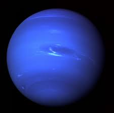

The Sideways Planet
Uranus rotates on its side, making its seasons very unusual.
It has a pale blue color due to methane in its atmosphere. Uranus is a blue-green planet that spins on its side! Johann Bode, a German astronomer, is credited with naming the planet Uranus in 1782. Proposing the name as a Latinized version of the Greek god of the sky, Ouranos, to follow the established pattern of Roman mythological names for other planets. The name became widely accepted by the mid-1800s, replacing William Herschel's initial suggestion of "George's Star" (Georgium Sidus) in honor of King George III.
